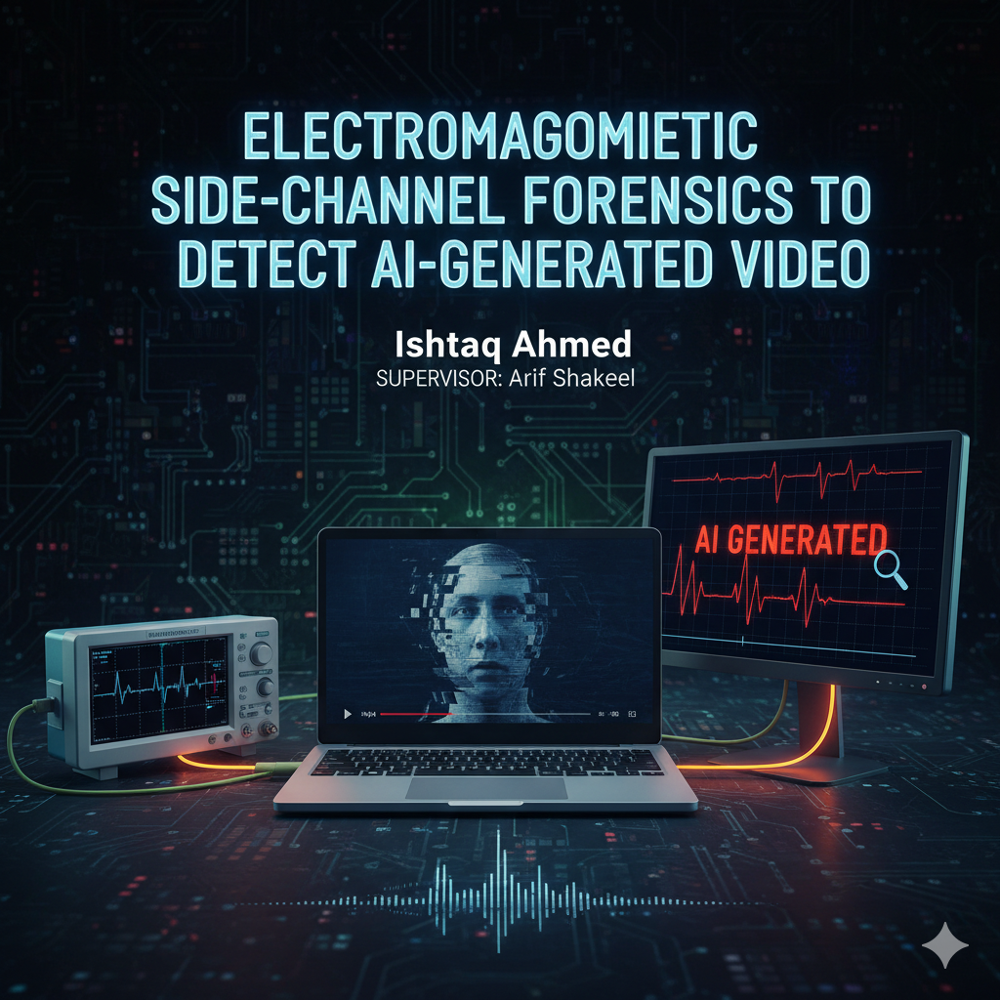

About me
 Hello I'm Ishtiaq (he/him), an undergraduate student from the department of CSE, BRAC University.
I am currently working as a Digital Forensic Investigator at Team Matrix - Elite Hackers
. Moreover, I am working with the BRACU Duburi Team in the Operations and Management Department. My interests lie in the fields of Systems security and Networking, Autonomous System, Forensics, Investigations and Machine Learning.
I aspire to pursue advanced research in my chosen field of interest, aiming to address real-world problems and contribute meaningful insights to the scientific and technological community.
Hello I'm Ishtiaq (he/him), an undergraduate student from the department of CSE, BRAC University.
I am currently working as a Digital Forensic Investigator at Team Matrix - Elite Hackers
. Moreover, I am working with the BRACU Duburi Team in the Operations and Management Department. My interests lie in the fields of Systems security and Networking, Autonomous System, Forensics, Investigations and Machine Learning.
I aspire to pursue advanced research in my chosen field of interest, aiming to address real-world problems and contribute meaningful insights to the scientific and technological community.
 My undergraduate thesis is being conducted under the supervision of Arif Shakil,
where I am exploring the integration of machine learning techniques with autonomous system security.
My undergraduate thesis is being conducted under the supervision of Arif Shakil,
where I am exploring the integration of machine learning techniques with autonomous system security.
 I recently worked on a project using FlutterFlow, developing an app called Rajshahi City App
for Android and iOS that aims to provide city-related information and services.
I recently worked on a project using FlutterFlow, developing an app called Rajshahi City App
for Android and iOS that aims to provide city-related information and services.


![Electromagnetic Side-Channel Forensics to Detect AI-generated Video  Work in Progress Digital Forensic, EM Side Channel Analysis For my Undergraduate thesis, under the supervision of Arif Shakil Sir, We are working on Electromagnetic Site Forensics for Detecting AI-Generated Videos. With the growing concern of crimes facilitated by AI-generated videos, our research focuses on distinguishing between AI-generated and real mobile-recorded videos by analyzing their digital signal patterns. The goal of this work is to introduce a new forensic approach that can set boundaries against digital crimes and enhance the reliability of video evidence.](https://raw.githubusercontent.com/withishtiaq/Ishtiaq-Ahmed/refs/heads/main/assets/images/work%20in%20progress.gif){kind=link}